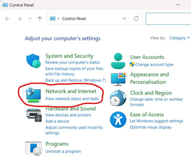
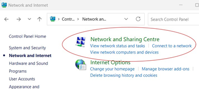
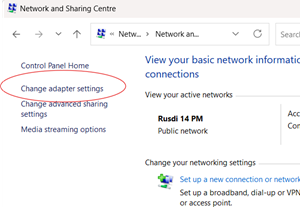
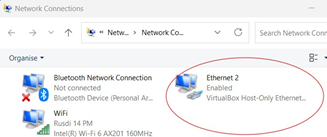
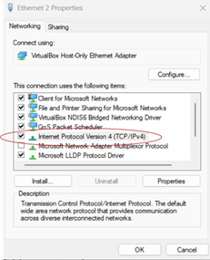
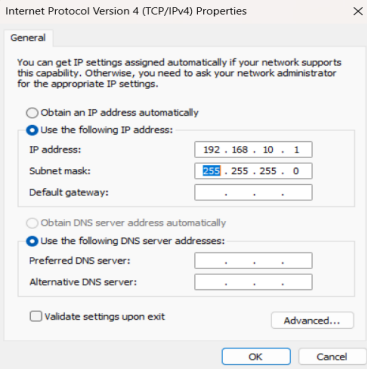
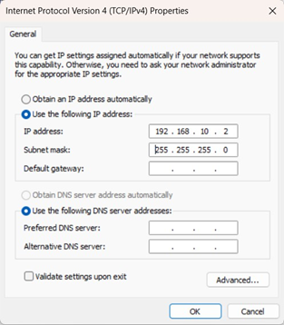
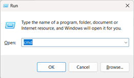
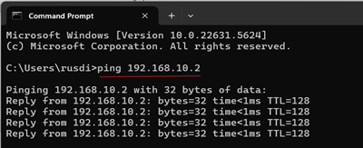
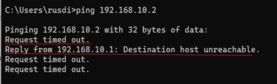

VLSM adalah teknik subnetting di mana kita memberikan subnet mask yang berbeda-beda untuk setiap subnet sesuai kebutuhan host.
Berbeda dengan subnetting biasa yang semua subnetnya sama besar, di VLSM kita bisa membuat ada subnet besar dan subnet kecil dalam satu network.
Tujuannya: menghemat IP address dan mengoptimalkan alokasi.
Menghemat penggunaan IP.
Fleksibel sesuai kebutuhan tiap segmen jaringan.
Mengurangi pemborosan alamat (waste IP).
Cocok untuk desain jaringan skala besar dan kompleks.
Perhitungan lebih rumit dibanding subnetting biasa.
Membutuhkan router yang mendukung classes routing (semua router modern sudah mendukung).
Tentukan kebutuhan host di setiap subnet.
Urutkan kebutuhan host dari yang terbesar ke terkecil.
Alokasikan subnet mask terkecil yang cukup untuk jumlah host tersebut.
Gunakan alamat IP secara berurutan, dari network terkecil hingga terbesar.
Pastikan tidak ada overlap.
Kita punya network 192.168.10.0/24 untuk 4 subnet dengan kebutuhan host:
Subnet A: 100 host
Subnet B: 50 host
Subnet C: 25 host
Subnet D: 10 host
Langkah 1 — Urutkan dari terbesar
Subnet A: 100 host
Subnet B: 50 host
Subnet C: 25 host
Subnet D: 10 host
Langkah 2 — Tentukan prefix masing-masing
Rumus host:
2host bit - 2 ≥ jumlah host
Subnet A: butuh 100 host → /25 (128 alamat,126 usable)
Subnet B: butuh 50 host → /26 (64 alamat,62 usable)
Subnet C: butuh 25 host → /27 (32 alamat,30 usable)
Subnet D: butuh 10 host → /28 (16 alamat,14 usable)
Langkah 3 — Alokasi alamat
Subnet A:
Network: 192.168.10.0/25
Host: 192.168.10.1 - 192.168.10.126
Broadcast: 192.168.10.127
Subnet B:
Network: 192.168.10.128/26
Host: 192.168.10.129 – 192.168.10.190
Broadcast: 192.168.10.191
Subnet C:
Network: 192.168.10.192/27
Host: 192.168.10.193 – 192.168.10.222
Broadcast: 192.168.10.223
Subnet D:
Network: 192.168.10.224/28
Host: 192.168.10.225 – 192.168.10.238
Broadcast: 192.168.10.239
Classfull = jaman dulu, kaku, pakai kelas.
CIDR = jaman modern, fleksibel, bisa gabung atau pecah network.
Subnetting = pecah network besar → subnet sama besar.
VLSM = pecah network besar → subnet beda-beda ukuran.
Komputer PC jaringan LAN
| No | Nama Client | IP Address | Subnet Mask | Nama file share |
|---|---|---|---|---|
| 1 | PC A | 192.168.10.1 | 255.255.255.0 | RPL |
| 2 | PC B | 192.168.10.2 | 255.255.255.0 | TKJ |
Mempersiapkan PC 2 unit yang sudah terkoneksi kabel jaringan
Memahami tentang pengalamatan Classfull, CIDR, Subnetting dan VLSM
Konfigurasi IP Address Classfull, CIDR, Subnetting dan VLSM
Pengujian jaringan
Pada PC A
Buka Control Panel
Klik Start > ketik Control Panel > Buka Control Panel + Network and Internet
Pilih Network and Internet Klik Network and Sharing Center.
Klik Change Adapter Settings Di sebelah kiri, klik Change adapter settings.
Pilih koneksi LAN (Ethernet) Klik kanan pada Ethernet (atau nama koneksi LAN kamu) > pilih Properties.
Pilih Internet Protocol Version 4 (TCP/IPv4)
Klik dua kali atau sekali lalu tekan Properties.
Masukkan IP Address manual
Tekan ok untuk menyelesaikannya
Ini masih untuk PC A, selanjutnya lakukan untuk PC B dengan IP Address yang berbeda sesuai tabel IP Address seperti dibawah ini
Lakukan pengujian koneksi melalui PC A ke PC B. Buka Command Prompt (Windows + R) kemudian ketik cmd, enter.
Ketik : ping 192.168.10.2 yang merupakan Alamat PC B
Ini menandakan jaringan LAN sudah terkoneksi
Jika seperti dibawah ini, berarti ada yang salah pada subnetmask-nya
Sampai disini konfigurasi IP Address pada jaringan LAN sudah selesai.